2026年测评 · AI Agent OpenClaw/MaxClaw/KimiClaw深度横评：普通人入门该选哪个？ 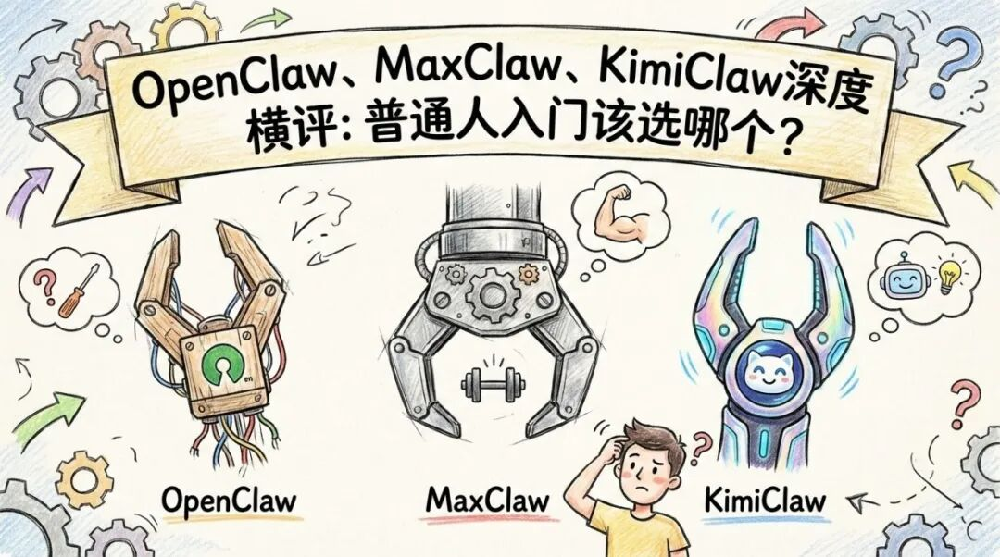 2026年最火的AI Agent产品"三大龙虾"深度测评，从安装配置到使用体验，从费用到安全性，一篇帮你做决定。 | |
01 为什么现在所有人都在聊"Claw"？ 如果你最近关注AI圈，肯定会被一个词刷屏——OpenClaw，江湖人称"大龙虾"。 这玩意儿到底有多火？ GitHub上23万+Star，被称为"2026年最炸裂的开源项目"。无数科技博主把它吹上天，说它是"AI Agent的iPhone时刻"。甚至有人为了用它，专门去买了一台Mac mini。 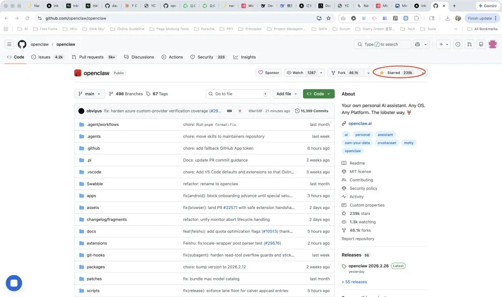 但问题很快来了：普通人根本用不上啊！ 安装Node.js、配置Docker、申请API Key、设置代理……这套流程走下来，能劝退99%的非技术用户。 于是各大厂商嗅到了机会，纷纷推出"开箱即用"版本： • MiniMax 推出了 MaxClaw • Kimi 推出了 KimiClaw • 再加上原本的 OpenClaw，现在就形成了"三大龙虾"格局。 作为普通人，我们最关心的问题是：这三个产品到底有什么区别？哪个最适合我？花钱买服务值不值？ | |
02 三位主角登场 在开始对比之前，先用一分钟带你认识今天要聊的三个产品。 1. OpenClaw——开源"老大哥" 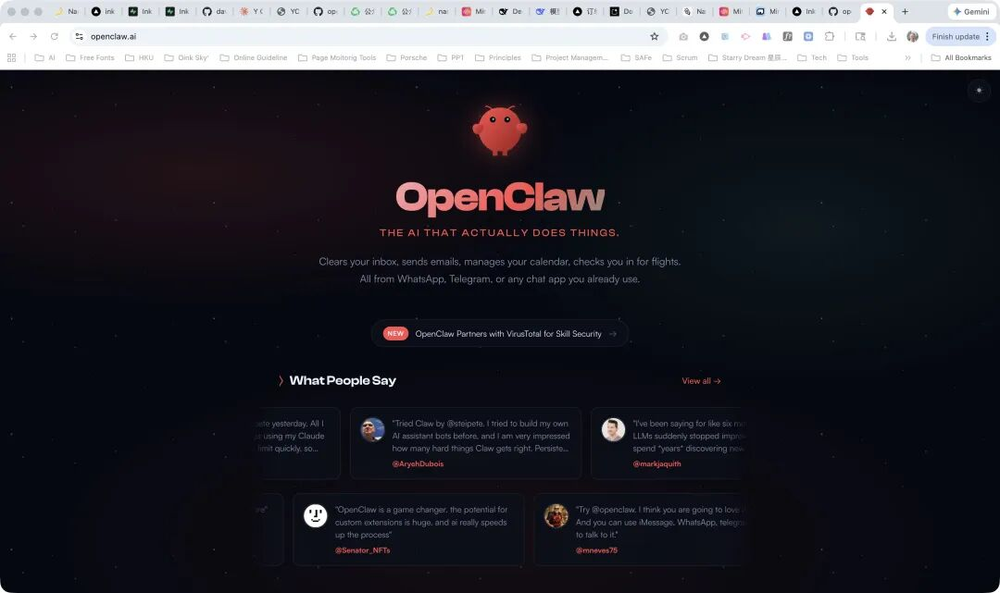 一句话定位：完全开源、本地部署的AI Agent框架 OpenClaw（曾用名Clawdbot、Moltbot）是一个开源项目，你可以在自己的电脑上运行它。它最核心的特点是：数据完全存在你自己电脑上，隐私零泄露。 它的使用方式是：通过聊天工具（WhatsApp、Telegram、飞书、钉钉等）给它发消息，它就会在你的电脑上帮你干活——整理文件、写代码、查资料、管理日程，7×24小时待命。 优点：数据完全自主、功能最强大、完全免费（但需要自己配置API） 缺点：安装配置极其复杂、需要技术基础、需要自己解决网络问题 适合谁：技术人员、隐私重度敏感用户、愿意折腾的玩家 2. MaxClaw——MiniMax的"精装版" 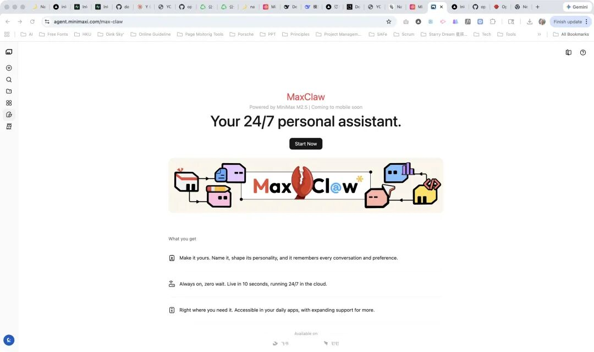 一句话定位：云端一键部署的OpenClaw MaxClaw是MiniMax基于OpenClaw打造的云端版本。它把原本需要本地部署的OpenClaw搬到了MiniMax的云服务器上，你只需要点几个按钮，就能拥有一个7×24小时在线的AI助手。 优点：一键部署、完全不用懂技术、预置工具丰富、接入飞书钉钉超方便 缺点：数据存在云端（MiniMax服务器）、需要订阅MiniMax会员、功能依赖平台更新 适合谁：想要OpenClaw能力但不想折腾技术的小白、普通办公族 3. KimiClaw——Kimi的"轻量版" 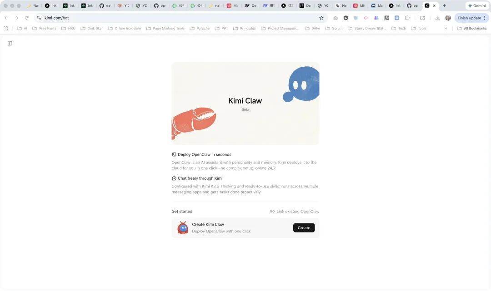 一句话定位：浏览器里的OpenClaw KimiClaw是月之暗面（Kimi的开发商）推出的云端OpenClaw。你不需要下载任何东西，直接在Kimi官网或APP里就能用。 优点：门槛最低、有40GB免费云存储、接入Kimi K2.5强力模型、支持关联已有OpenClaw实例 缺点：付费订阅才能使用（¥199/月）、部分功能还在优化中 适合谁：Kimi重度用户、想要最简单入门体验的人、懒癌晚期患者 | |
03 第一轮PK：安装配置，谁能让普通人3分钟上手？ 对于绝大多数用户来说，安装门槛是决定性因素。哪怕功能再强，如果安装过程太复杂，根本没用。 3.1 OpenClaw：劝退率99% 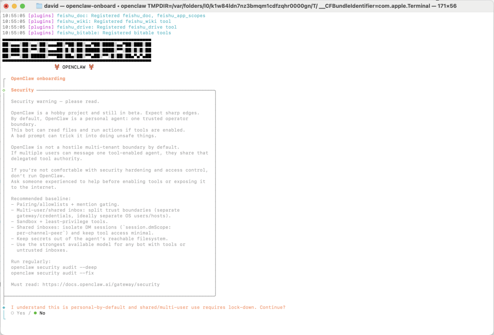 安装难度：★☆☆☆☆（对普通人来说是地狱级） 先来看看OpenClaw的安装要求： 前置条件： • 操作系统：macOS/Linux/Windows（需要WSL2） • Node.js ≥ 22.0.0 • Docker（推荐） • Git • 管理员权限 安装步骤（以Windows为例）： 1. 安装NVM for Windows 2. 安装Node.js 22版本 3. 以管理员身份运行PowerShell 4. 执行一键安装命令： 5. 配置AI模型API Key（需要自己申请） 6. 解决网络问题（懂的都懂） 耗时：顺利的话1-2小时，不顺利的话可能卡一整天 实测反馈：我在安装过程中遇到了Node版本不兼容、Docker启动失败、API Key配置失败、网络超时等各种问题。最后还是在技术朋友的帮助下才跑通。 总结：不建议普通人尝试，真的会怀疑人生。 | |
3.2 MaxClaw：小白友好度80% 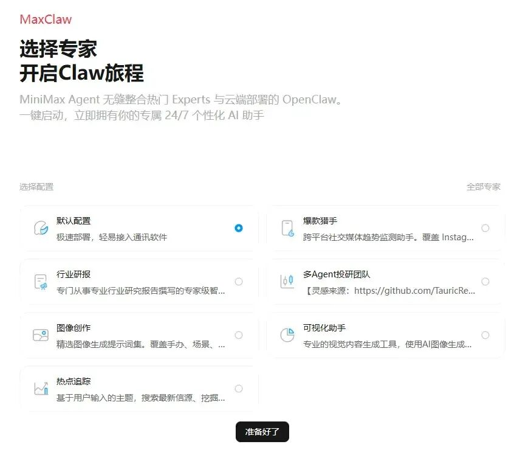 安装难度：★★★☆☆ MaxClaw的核心理念就是"零部署，开箱即用"。 安装步骤： 1. 访问MiniMax Agent官网（agent.minimaxi.com） 2. 注册/登录账号 3. 开通基础版会员（需要付费） 4. 点击左侧菜单栏的MaxClaw 5. 点击"立即创建" 6. 选择你的Agent风格（高冷总裁/温柔助理/毒舌小伙伴等） 7. 等待20秒，部署完成 接入飞书/钉钉（可选）： 1. 在飞书开发者后台创建应用 2. 配置权限 3. 将App ID和Secret发给MaxClaw 4. 完成连接 耗时：注册+开通会员约5分钟，部署20秒，接入飞书约10分钟 实测反馈：整个过程非常顺畅，没有遇到任何卡点。MiniMax的教程也很详细，照着做就行。 总结：技术小白可以接受，但需要学习一下基础操作。 | |
3.3 KimiClaw：真的有手就行 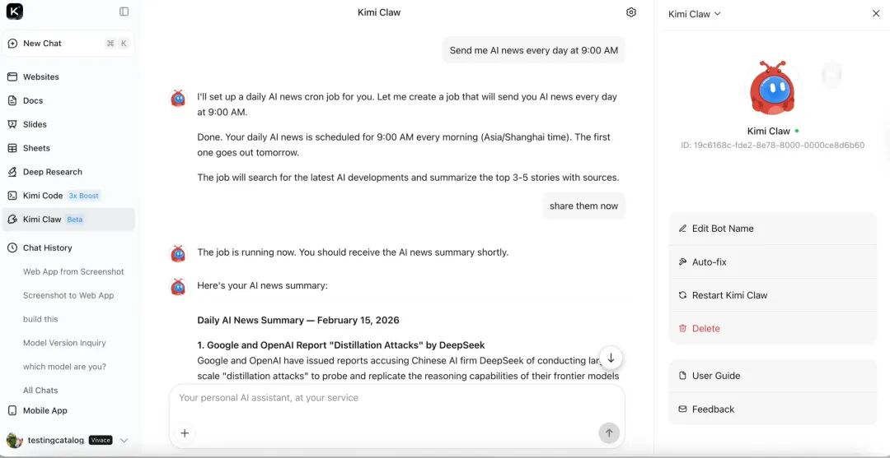 安装难度：★★★★★ KimiClaw的门槛是三者中最低的。 安装步骤： 1. 打开kimi.com或下载Kimi APP 2. 登录账号 3. 在左侧边栏找到"KimiClaw"入口 4. 点击"创建"（免费体验版）或"订阅"（付费专业版） 5. 开始使用 有两种使用模式： • 一键部署：系统自动在云端跑一个全新的OpenClaw实例，配置好Kimi K2.5 Thinking模型和联网搜索，约1分钟搞定 • 关联已有：如果你本地已经部署了OpenClaw，可以一键关联，保留所有配置和记忆 耗时：2分钟以内 实测反馈：这是我用过最顺畅的AI Agent产品。直接打开就能用，没有任何环境配置。 总结：有手就会，完全没有学习成本。 | |
📊 安装配置对比小结 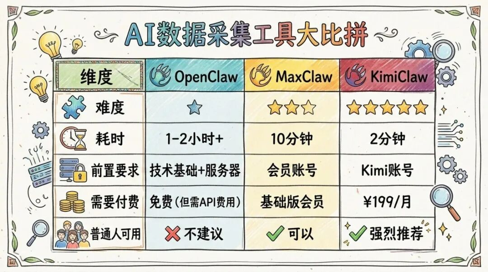 本轮结论： • 想折腾技术 → OpenClaw • 想要平衡便捷和功能 → MaxClaw • 就想要最简单的 → KimiClaw | |
04 第二轮PK：真实干活能力，谁是真·生产力工具？ 安装只是第一步，关键还得看实际使用体验。我设计了三个普通用户最常见的场景，来测试这三个产品的能力。 场景一：帮我整理这个PDF报告的重点 我上传了一份50页的行业研究PDF，让AI帮我提取核心观点。 OpenClaw： • 需要先配置文件读取的Skill（技能） • 读取速度取决于你用的模型能力 • 总结质量较高，但需要自己调试 • 评分：★★★☆☆ MaxClaw： • 预置了文档处理工具，直接可用 • 响应速度快，总结较为全面 • 评分：★★★★☆ KimiClaw： • 云端直接读取，响应最快 • 总结质量稳定，细节提取到位 • 40GB云存储，文件随存随取 • 评分：★★★★★ | |
场景二：帮我写一封工作邮件 让AI帮我写一封正式的商务邮件。 OpenClaw： • 需要配置邮件发送的Skill • 灵活性高，可以深度定制 • 但配置过程繁琐 • 评分：★★★☆☆ MaxClaw： • 内置邮件相关工具 • 生成质量稳定 • 可直接通过飞书发送 • 评分：★★★★☆ KimiClaw： • 生成速度最快 • 中文邮件表达地道 • 可一键复制或发送到其他平台 • 评分：★★★★★ | |
场景三：帮我做个数据分析+可视化 我给了一份Excel销售数据，让AI分析并生成图表。 OpenClaw： • 可以调用代码执行能力 • 理论上可以做任何数据分析 • 但需要自己写提示词调教 • 评分：★★★★☆ MaxClaw： • 预置了数据分析Expert（专家） • 支持生成图表和报告 • 配合飞书使用很方便 • 评分：★★★★☆ KimiClaw： • 支持Excel文件直接分析 • 生成图表需要额外步骤 • 整体体验偏轻量 • 评分：★★★☆☆ | |
📊 干活能力对比小结 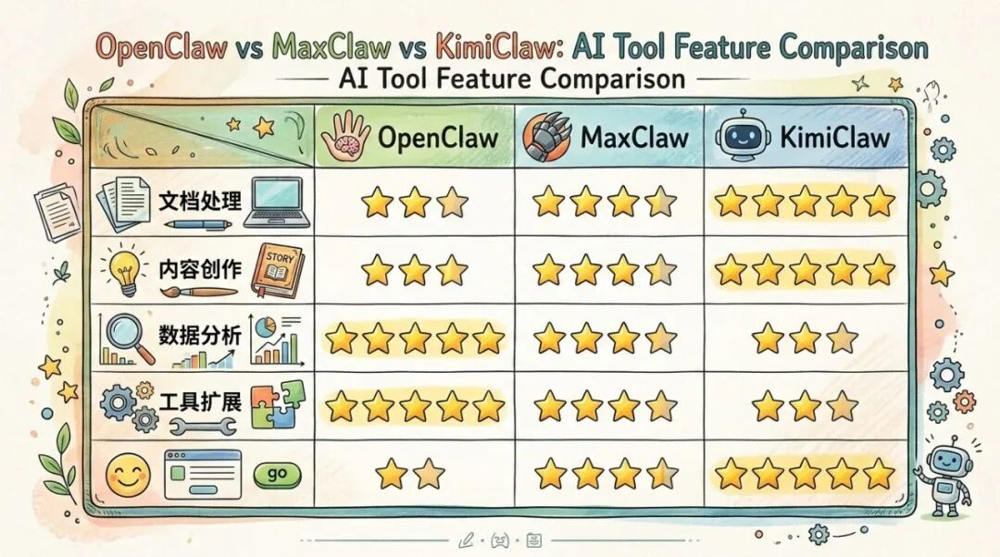 本轮结论： • 想要最全功能 → OpenClaw • 想要平衡便捷和功能 → MaxClaw • 日常轻度使用 → KimiClaw | |
05 第三轮PK：花钱吗？免费版能用吗？ 钱的事不能不考虑。来看看三个产品的收费模式。 5.1 收费模式一览 OpenClaw： • 软件本身免费（开源项目） • 但你需要： - 自己准备服务器（本地电脑或云服务器） - 自己购买AI模型API Key（按调用量收费） - Kimi K2.5、Claude、DeepSeek等，价格不等 • 隐性成本：电费、硬件折旧、时间精力 MaxClaw： • 基础版会员即可使用（具体价格参考MiniMax官网） • 包含：云端部署、50GB存储、预置Expert工具 • 不需要额外购买API Key • 接入飞书/钉钉免费 KimiClaw： • 免费体验版：有限额度，只能尝鲜 • 付费专业版：¥199/月 • 包含：40GB云存储、无限次使用Kimi K2.5模型、优先算力 | |
5.2 成本对比 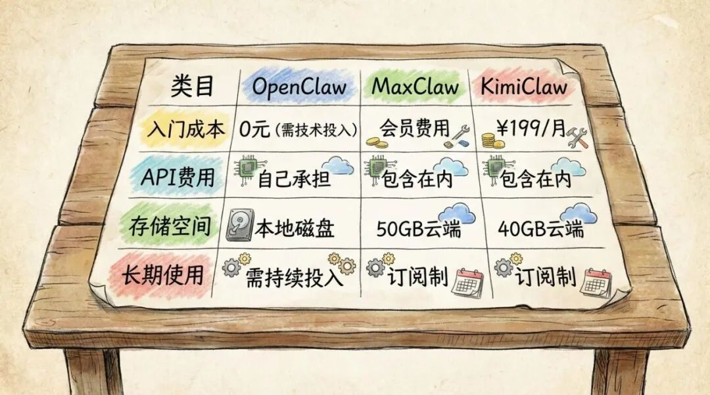 | |
5.3 免费版能用吗？ OpenClaw： • 理论上完全免费，只要你愿意花时间精力去折腾 • 但API调用是硬性支出，除非你只用免费额度的模型 • 结论：可以白嫖，但有门槛 MaxClaw： • 没有完全免费的版本，需要付费 • 但MiniMax经常有优惠活动 • 结论：付费会员制 KimiClaw： • 有免费体验版，每天限制使用次数 • 免费版功能受限，但可以体验核心功能 • 结论：可以白嫖，但付费更香 | |
本轮结论： • 想白嫖 → OpenClaw（需要技术能力）或 KimiClaw免费版 • 愿意付费 → KimiClaw（¥199/月）或 MaxClaw | |
06 第四轮PK：安全与隐私，我的聊天记录会被看光吗？ 这是个非常关键但容易被忽略的问题。 6.1 数据存储位置 OpenClaw： • 数据完全存在本地，只有你能访问 • 只有AI模型调用时，数据会以API请求的形式发送到模型服务商 • 隐私保护等级：★★★★★ MaxClaw： • 数据存储在MiniMax云端服务器 • MiniMax官方承诺不会用于模型训练（但需自行判断） • 隐私保护等级：★★★☆☆ KimiClaw： • 数据存储在月之暗面云端服务器 • 月之暗面官方承诺数据仅用于提供服务 • 隐私保护等级：★★★☆☆ | |
6.2 敏感信息处理 如果你要处理极其敏感的信息（比如商业机密、个人隐私），建议： • 用OpenClaw，数据完全离线，不经过任何第三方服务器 • 选用支持本地部署的模型（如Ollama） • 不要用云端版本处理敏感信息 | |
本轮结论： • 隐私重度敏感 → OpenClaw • 普通办公使用 → MaxClaw / KimiClaw 均可 | |
07 第五轮PK：生态与社区，谁的路更宽？ 生态决定了产品的未来和天花板。 7.1 开源生态 OpenClaw： • GitHub 23万+ Star • 社区活跃，插件丰富 • 无数开发者贡献Skill和Tool • 生态评级：★★★★★ MaxClaw / KimiClaw： • 闭源产品，依赖官方更新 • 官方持续迭代中 • 生态评级：★★★☆☆ | |
7.2 集成能力 OpenClaw： • 可接入几乎所有通讯工具（WhatsApp、Telegram、飞书、钉钉、Slack等） • 可调用任意API • 可本地运行任意程序 • 灵活性：★★★★★ MaxClaw： • 深度集成飞书、钉钉 • 支持调用MiniMax生态内的工具 • 灵活性：★★★★☆ KimiClaw： • 集成在Kimi产品矩阵中 • 支持关联已有OpenClaw实例 • 灵活性：★★★☆☆ | |
本轮结论： • 想要最丰富的生态和扩展性 → OpenClaw • 企业用户，需要深度集成办公软件 → MaxClaw • 个人用户，日常轻度使用 → KimiClaw | |
08 终极对比：一张表看懂怎么选 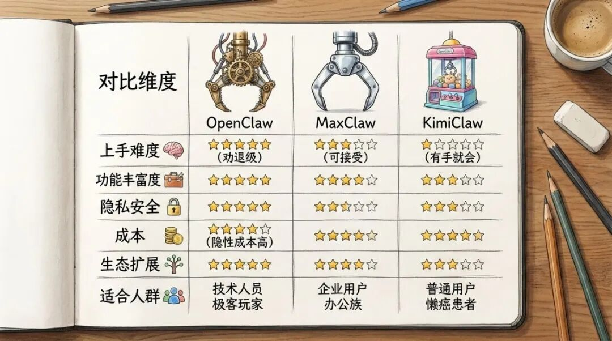 | |
💡 最终推荐 • 如果你是技术人员，想深度定制、追求最高灵活性 → OpenClaw • 如果你在企业，需要团队协作、深度集成飞书钉钉 → MaxClaw • 如果你是普通用户，就想找个AI助手帮帮忙 → KimiClaw • 如果你注重隐私，不想数据上传云端 → OpenClaw（本地部署） • 如果你想先免费体验 → KimiClaw免费版 当然其实还有一大堆的小龙虾NanoClaw/ZeroClaw/PicoClaw/TinyClaw/IronClaw/NullClaw... 有时间的都可以自己一个一个去体验。 | |
总结 AI Agent的浪潮已经来了，"三大龙虾"各有各的定位和优势。没有最好的产品，只有最适合自己的选择。 对于普通人来说，我的建议是： 1. 先试KimiClaw免费版，感受一下什么是AI Agent 2. 如果用得上、觉得值，再考虑付费 3. 如果想深入研究，再去折腾OpenClaw 技术的本质是让人生活更美好，而不是制造新的门槛。希望这篇文章能帮你做出选择。 本文仅为个人观点，内容仅供参考 | |